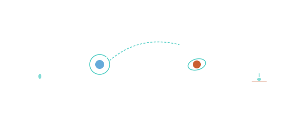

MISSION PHASES

101 · zoom in
Mission Phases — the flight is just five phases on repeat.
Pretty much every interplanetary mission, from Voyager to Perseverance, follows the same script. Launch out of Earth's atmosphere into low orbit. Trans-X injection — the big single burn that flings you onto the transfer ellipse to the Moon (TLI), Mars (TMI), Venus, Jupiter, whatever. Coast for months, with a few small Trajectory Correction Maneuvers along the way. Orbit insertion — the braking burn at the destination. EDL — entry, descent, and landing — for landers.
Apollo flew this script to the Moon in three days. Curiosity flew it to Mars in eight months. Voyager flew it three times — once to leave Earth, then twice more for gravity-assist hops past Jupiter and Saturn. The phases scale; the phase sequence doesn't.
Seven sections here cover all of it, plus two specialised phases — MET (Mission Elapsed Time, the universal stopwatch) and NRHO (the orbit NASA's Lunar Gateway will live in). Read them as a flight log: launch first, EDL last.
→ Pick a section from the right rail to start reading.